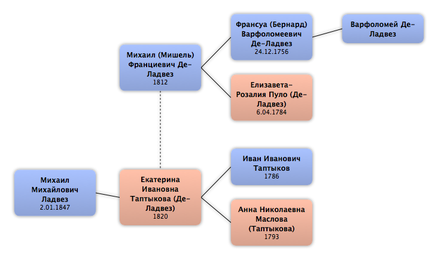

Домой
Домой
 Люди
Люди
 Семьи
Семьи
 Источники
Источники
 Диаграммы
Диаграммы
 Статистика
Статистика
Михаил (Мишель) Франциевич Де-Ладвез

Контекст

Родители
| Отец | Дата рождения | Мать | Дата рождения |
|---|---|---|---|
|
Франсуа (Бернард) Варфоломеевич Де-Ладвез
|
24.12.1756 |
 Елизавета-Розалия Пуло Елизавета-Розалия Пуло
|
6.04.1784 |
Родители и дети
| Партнёры | Дата рождения | Дети |
|---|---|---|
|
Екатерина Ивановна Таптыкова
|
1820 |
Михаил Михайлович Ладвез
|
События
| Тип события | Дата | Место | Описание |
|---|---|---|---|
| Рождение | 1812 | Москва, Россия | |
| Военная служба | 25.01.1828 | В службу вступил унтер-офицером в Бородинский (ныне Егерский) пехотный полк | |
| Военная служба | 24.04.1834 | Пожалован в прапорщики и переведен в Колыванский Егерский полк | |
| Военная служба | 4.06.1834 | В Бородинский Егерский полк | |
| Военная служба | 23.05.1838 | По домашним обстоятельствам отставлен подпоручиком | |
| Военная служба | 13.06.1838 | Отставка | |
| Вера | Католик | ||
| Смерть | 1850 | Рязань, Россия |
Факты
Медиа
Примечание
4 дек. 1850 подпор. МихаилФранцович де Ладвез просил Ряз. ДДС внести его с сыном Михаилом в ДРК Рязан. губ.
Проживал в Рязани, где его жена имела дом.
Представил указ об отставке от 13 июля 1838 и коп. метрич. свид-ва сына.
5 дек. 1850 Михаил Францович де Ладвез вместе с сыном Михаилом внесён в Ряз. ДДС во II ч. ДРК Рязан. губ.
Указом от 29 февр. 1852 Прав. Сенат приказал Ряз ДДС пополнить дело Де Ладвеза документом о присяге Михаила Франовича на подданство России.
В ходе переписки Ряз. ДДС с Управлением Московского коменданта выяснилось, что прапорщик Михаил Францович Де-Ладвез присягнул при Москов. 24 апр. 1838, будучи в Комиссии Военного суда при Ордонанс-гаузе, а подпорудчик Де-Ладвез (безымянный), находившийся в 1838 г. в отпуске в Москве, присягал 28 янв. 1839 г. во 2-м Учебном Карабинерском полку, куда он был командирован из Галицкого Егерск. полка.
Проживал в Рязани, где его жена имела дом.
Представил указ об отставке от 13 июля 1838 и коп. метрич. свид-ва сына.
5 дек. 1850 Михаил Францович де Ладвез вместе с сыном Михаилом внесён в Ряз. ДДС во II ч. ДРК Рязан. губ.
Указом от 29 февр. 1852 Прав. Сенат приказал Ряз ДДС пополнить дело Де Ладвеза документом о присяге Михаила Франовича на подданство России.
В ходе переписки Ряз. ДДС с Управлением Московского коменданта выяснилось, что прапорщик Михаил Францович Де-Ладвез присягнул при Москов. 24 апр. 1838, будучи в Комиссии Военного суда при Ордонанс-гаузе, а подпорудчик Де-Ладвез (безымянный), находившийся в 1838 г. в отпуске в Москве, присягал 28 янв. 1839 г. во 2-м Учебном Карабинерском полку, куда он был командирован из Галицкого Егерск. полка.
Был в походах:
с 31.07 по 19.09.1829 в Грузии, следовал через Боржомское ущелье в Азиатскую Турцию до крепости Ахалцих;
с 14 по 28 августа в Аджарии в отряде генерал-майора бар. Остен-Сакена;
16 августа при занятии м. Кум, местопребывания Ахмет-паши Аджарского;
19 августа при отражении нападения и отступлении ранен ружейной пулей в правую ногу, находился в лазарете Бородинского Егер. полка до 19 сентября;
в 1830 с отрядом генерал-лейтенанта барона Розена в Кумыкии “для прекращения волнения”;
с 31 мая по 27 июня под начальством генерал-лейтенанта Вельяминова против непокорных чеченских деревень;
19 и 20 декабря при занятии и уничтожении Дзюлгай-Юрта и Галай-Юрта;
21 декабря при Катар-Юрте;
22 и 23 декабря при Пхан-Кичу;
с 4.01.1831 снова в Чечне, в перестрелках с горцами и при сожжении их деревень:
7 января при д. Мартан и Джарган-Юрт, при поиске в лесу скрывшихся жителей;
9 января при занятии Узекен-Юрта;
11 и 12 января при сожжении Бесенбера и прилегающих к нему хуторов;
15 и 16 января Лутур в следовании из Герменчука к с. Автуры;
17 июля – к Гельдигену, при его взятии и сожжении;
19 января при отражении многочисленных атак чеченцев во время следования к Анты-Юрту;
с 20 января в перестрелках при истреблении чеченских деревень.
Имел серебряную медаль в память Русско-турецкой войны 1828 – 29.
Отмечен Высоч. благоволениями за смотры 9,11, 13 сент. 1834.
Пишет и читает по-русски и французки, знает арифметику и географию.
В отпуске с 13 янв. по 1 апр. 1837
В штрафах и т.п. не бывал.
Указ об отставке, данный в Москве, подписан ген.-адъют., ген.-лейт., командиром 6-го Пехотн. корп. и кавалейгардом и дежур. штаб-офиц. полковником Жуковым.
с 31.07 по 19.09.1829 в Грузии, следовал через Боржомское ущелье в Азиатскую Турцию до крепости Ахалцих;
с 14 по 28 августа в Аджарии в отряде генерал-майора бар. Остен-Сакена;
16 августа при занятии м. Кум, местопребывания Ахмет-паши Аджарского;
19 августа при отражении нападения и отступлении ранен ружейной пулей в правую ногу, находился в лазарете Бородинского Егер. полка до 19 сентября;
в 1830 с отрядом генерал-лейтенанта барона Розена в Кумыкии “для прекращения волнения”;
с 31 мая по 27 июня под начальством генерал-лейтенанта Вельяминова против непокорных чеченских деревень;
19 и 20 декабря при занятии и уничтожении Дзюлгай-Юрта и Галай-Юрта;
21 декабря при Катар-Юрте;
22 и 23 декабря при Пхан-Кичу;
с 4.01.1831 снова в Чечне, в перестрелках с горцами и при сожжении их деревень:
7 января при д. Мартан и Джарган-Юрт, при поиске в лесу скрывшихся жителей;
9 января при занятии Узекен-Юрта;
11 и 12 января при сожжении Бесенбера и прилегающих к нему хуторов;
15 и 16 января Лутур в следовании из Герменчука к с. Автуры;
17 июля – к Гельдигену, при его взятии и сожжении;
19 января при отражении многочисленных атак чеченцев во время следования к Анты-Юрту;
с 20 января в перестрелках при истреблении чеченских деревень.
Имел серебряную медаль в память Русско-турецкой войны 1828 – 29.
Отмечен Высоч. благоволениями за смотры 9,11, 13 сент. 1834.
Пишет и читает по-русски и французки, знает арифметику и географию.
В отпуске с 13 янв. по 1 апр. 1837
В штрафах и т.п. не бывал.
Указ об отставке, данный в Москве, подписан ген.-адъют., ген.-лейт., командиром 6-го Пехотн. корп. и кавалейгардом и дежур. штаб-офиц. полковником Жуковым.
Источники
Родство
| Имя | Степень родства | Дата рождения | Место рождения | Дата смерти | Место смерти |
|---|---|---|---|---|---|
| Партнёров | |||||
| Партнёр или жена | 1820 | 1886 | Рязань, Россия | ||
| Братья и сёстры | |||||
| Брат | 14.10.1807 | Москва, Россия | 26.06.1857 | Москва, Россия | |
| Брат | 9.7.1813 | ||||
| Брат | 18.09.1817 | Москва, Россия | 29.10.1854 | Санкт-Петербург, Россия | |
| Дети | |||||
| Сын | 2.01.1847 | Москва, Россия | |||
| Родителей | |||||
| Отец | 24.12.1756 | Франция | 2.09.1846 | Москва, Россия | |
| Мать | 6.04.1784 | 3.02.1845 | Москва, Россия | ||
| Правнуки | |||||
| Правнучка | 23.10.1899 | Москва, Россия | |||
| Правнук | 21.07.1900 | Москва, Россия | 1947 | ||
| Правнучка | 22.09.1902 | Тифлис (Тбилиси), Грузия | |||
| Правнучка | 03.12.1905 | Москва, Россия | |||
| Правнучка | 10.04.1907 | Двинск, Россия | |||
| Правнучка | 16.02.1910 | Санкт-Петербург, Россия | |||
| Правнучка | 23.03.1911 | Москва, Россия | |||
| Правнук | 10.05.1912 | Москва, Россия | |||
| Пра-правнуки | |||||
| Пра-правнук | |||||
| Пра-правнучка | |||||
| Пра-правнук | |||||
| Пра-правнучка | |||||
| Пра-правнучка | |||||
| Пра-правнук | 22.08.1926 | Хабаровск, СССР | 08.05.2006 | Санкт-Петербург, Россия | |
| Пра-пра-правнуки | |||||
| Пра-пра-правнук | |||||
| Пра-пра-правнук | |||||
| Пра-пра-правнучка | 19.03.1963 | Ленинград, СССР | |||
| Пра-пра-правнук | 22.02.1965 | Ленинград, СССР | |||
| Пра-пра-пра-правнуки | |||||
| Пра-пра-пра-правнук | 01.09.1988 | Ленинград, СССР | |||
| Пра-пра-пра-правнук | 19.11.1991 | Санкт-Петербург, Россия | |||
| Пра-пра-пра-правнук | 15.07.1995 | Санкт-Петербург, Россия | |||
| Дедушки и бабушки | |||||
| Дедушка | |||||
| Жёны сыновей (мужья дочерей) | |||||
| Сноха | |||||
| Шурины и невестки | |||||
| Невестка | |||||
| Племянники и племянницы | |||||
| Племянник | 9.03.1844 | 23.09.1887 | |||
| Племянница | 24.07.1845 | ||||
| Племянница | 2.09.1846 | ||||
| Племянница | 27.09.1849 | ||||
| Племянник | 28.09.1849 | Москва, Россия | |||
| Внучатые племянники и внучатые племянницы | |||||
| Внучатый племянник | 30.01.1870 | ||||
| Внучатый племянник | 19.11.1871 | Москва, Россия | 25.04.1921 | Челябинск, Россия | |
| Правнучатые племянники и правнучатые племянницы | |||||
| Правнучатый племянник | 31.12.1895 | г. Сороки Бессарабской губернии, Россия | 27.10.1937 | Оренб. обл, СССР | |
| Правнучатый племянник | 18.06.1900 | ||||
| Правнучатый племянник | 16.07.1900 | ||||
| Правнучатый племянник | 1901 | ||||
| Правнучатая племянница | 1905 | ||||
| Внуки | |||||
| Внучка | |||||
| Внучатая сноха | |||||
| Внучка | |||||
| Внучатая сноха | 1875 | Москва, Россия | |||
| Внук | 23.09.1880 | ||||
| Внук | 23.2.1888 | Москва, Россия | 05.08.1929 | Москва, СССР | |